FaceMe 官網設計 - 首頁與產品頁改版
FaceMe 是企業級 AI 人臉辨識品牌，廣泛應用於門禁、考勤、支付驗證與身份確認等場景。在官網改版專案中，我負責首頁與多個產品頁的 UX/UI 設計與介面重構，並延伸至 HTML/CSS 網頁實作。
舊官網面臨的核心問題
透過實際使用回饋與後台數據分析，我們歸納出最需要改善的問題，作為本次改版的出發點。
資訊架構不清
資訊層級與操作路徑缺乏明確引導，增加使用者查找技術規格與應用情境的成本。
視覺不夠貼近品牌
版面樣式老舊，且缺乏一致的視覺規範，難以有效傳達品牌的技術實力與專業形象。
系統效率不足
既有系統逐漸難以因應使用需求，反應速度較慢，影響日常操作效率。
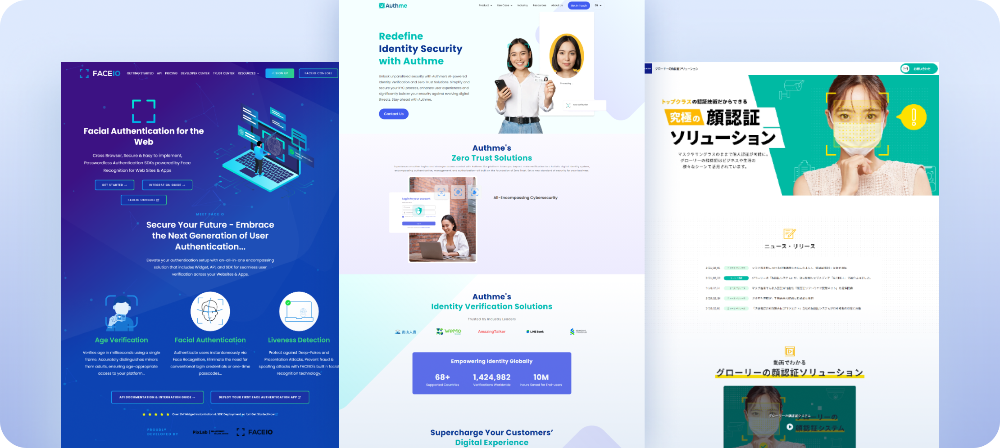
釐清市場定位與差異
彙整多家同類型官網，分析其資訊架構、視覺風格與轉換設計，並歸納可借鏡的呈現方式與差異化方向，作為後續改版的參考依據。
資訊架構與 Wireframe
建立清晰的網站架構與頁面流程，透過 Wireframe 驗證資訊層級、內容配置與使用動線，為後續介面設計奠定基礎。
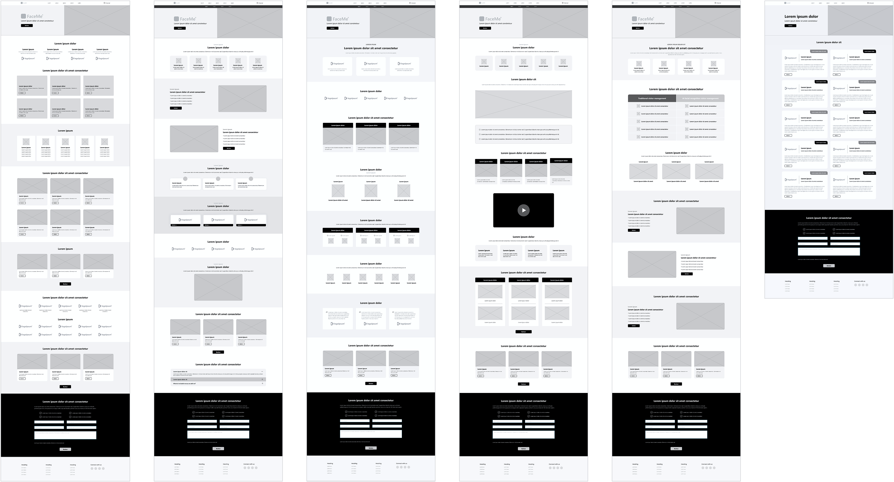
塑造清晰的網站視覺風格
將 Wireframe 延伸至高保真介面，統整介面元件、圖像與互動樣式，建立一致的視覺方向。
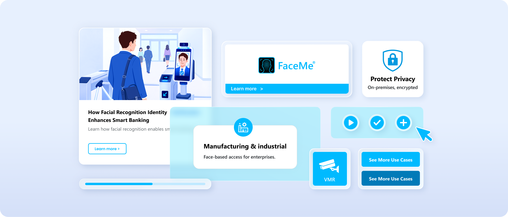
改版重點
從首頁著手建立新版網站的設計方向，重新規劃內容呈現與頁面結構，並將設計邏輯延伸至後續產品頁。
區塊重整 ：
國際認證及獎項
重新分類，提升資訊辨識度
主要功能
整合功能資訊，聚焦核心能力
應用實例方案
擴充應用情境，提升產品探索效率
內容精簡
移除非必要區塊，減少資訊冗餘
產品系列
濃縮版面配置，提高資訊密度
實績案例
強化 CTA 引導，增加延伸瀏覽機會
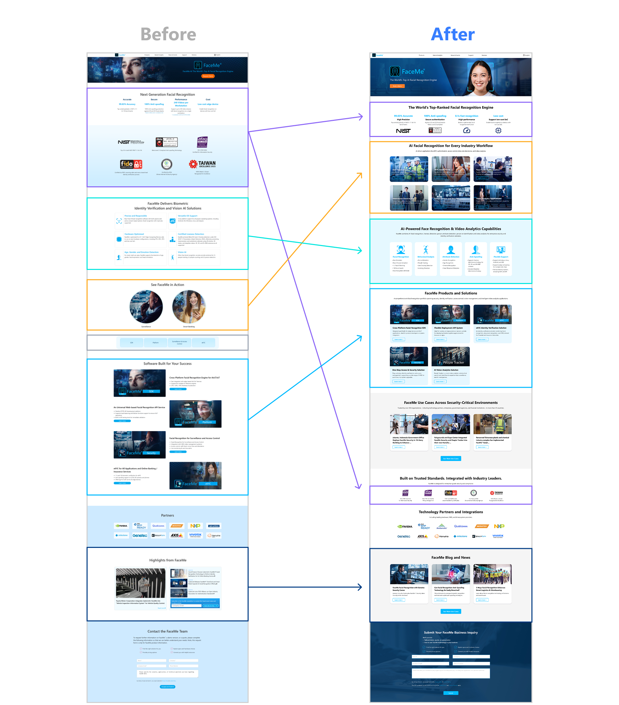
以三個重點區域為例，呈現改版前後的設計對比
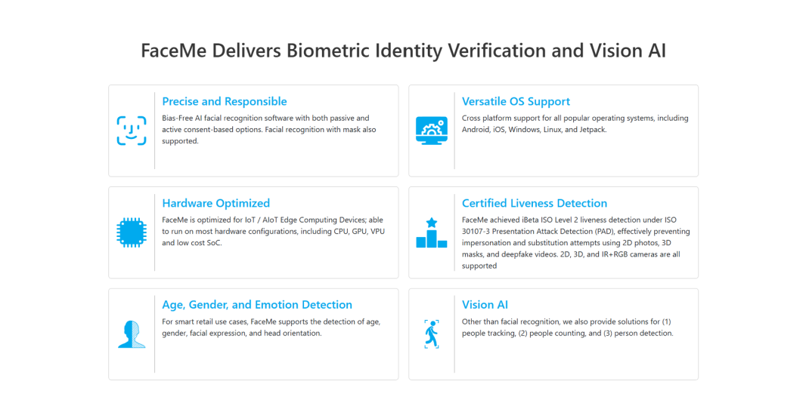
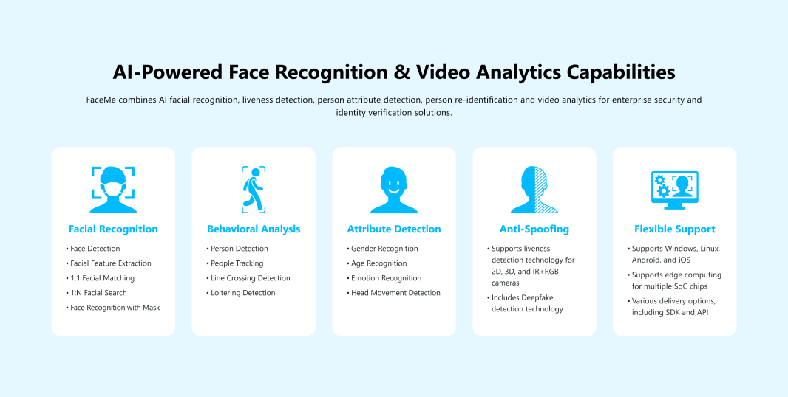
整合產品核心能力
將原本缺乏視覺焦點的版面重新整合，透過卡片式橫向排列，搭配條列重點與底色區隔，強化視覺引導，使資訊更聚焦、閱讀動線更清晰。
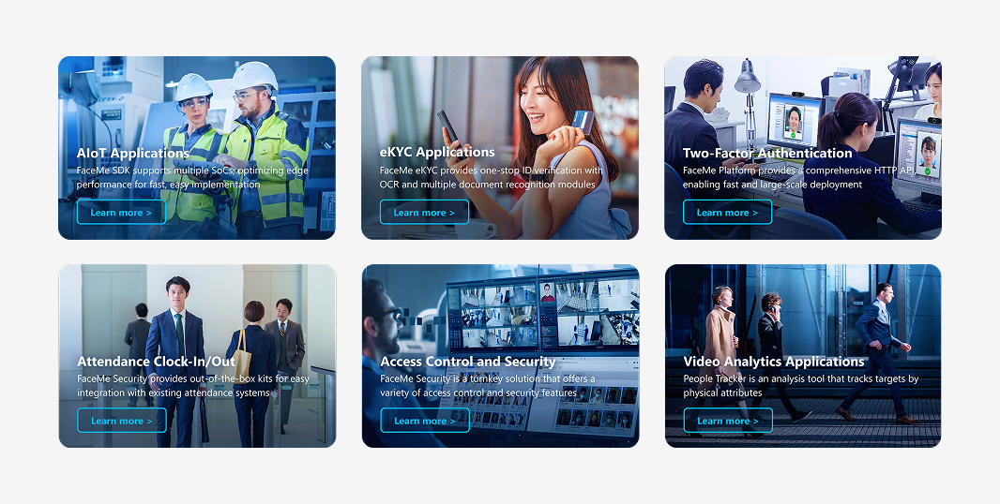
擴充產品應用情境
針對資訊不足與頁面導向不直覺的問題，重新整理內容與操作方式，補充應用情境與簡述，並加入明確的導向按鈕，讓使用者快速掌握重點並找到合適的產品。
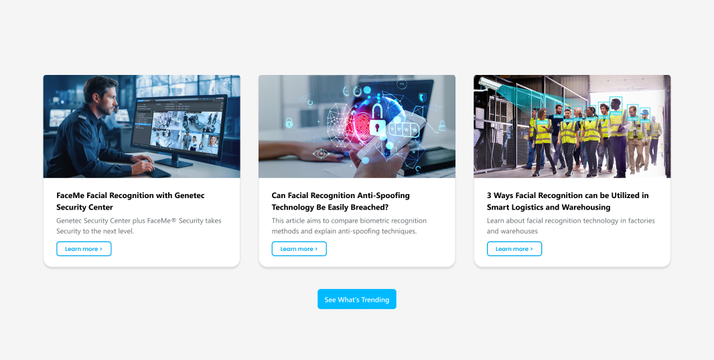
強化延伸瀏覽引導
重新梳理視覺層級與內容呈現方式，使版面風格更一致、重要資訊更容易辨識，並透過明確的按鈕引導使用者延伸瀏覽，強化內容黏著度。
多產品頁面改版的設計原則
清楚傳達產品價值
突顯核心功能與產品特色。
提升資訊易讀性
降低閱讀負擔，讓重點更容易掌握。
保留版面彈性
依不同產品需求，彈性調整內容配置。
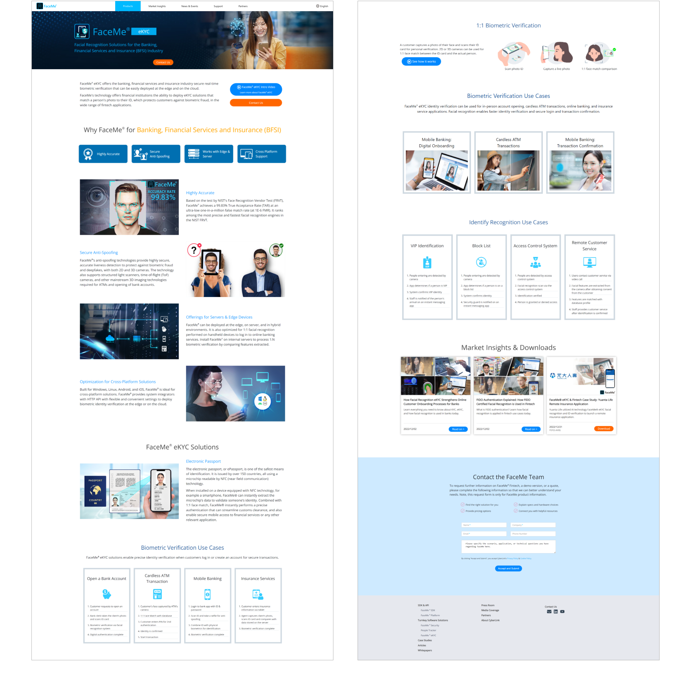
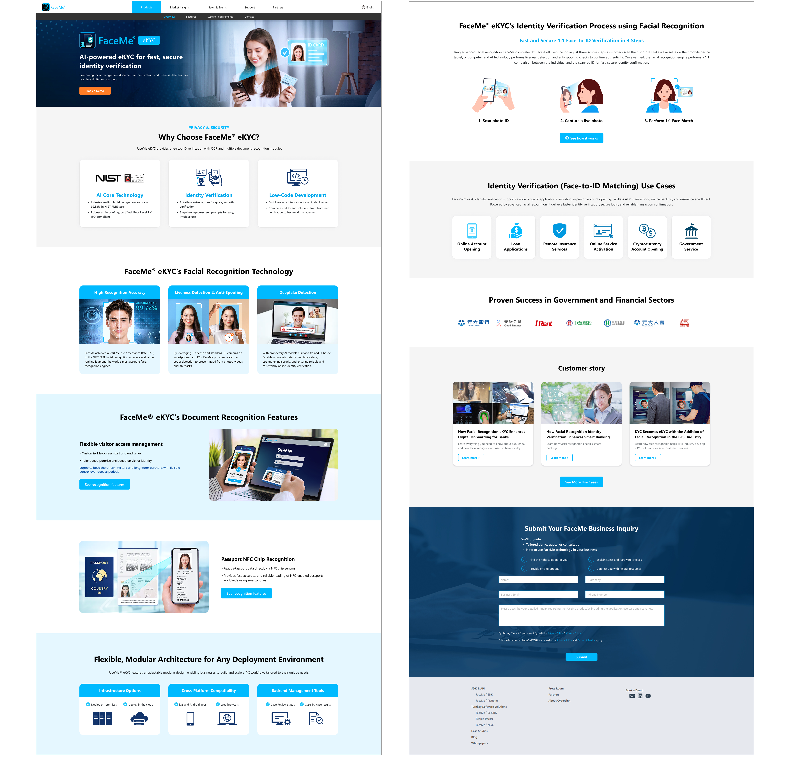
以三大內容架構，重新編排資訊層級
核心功能
以 Icon 強化視覺引導，快速理解產品優勢。
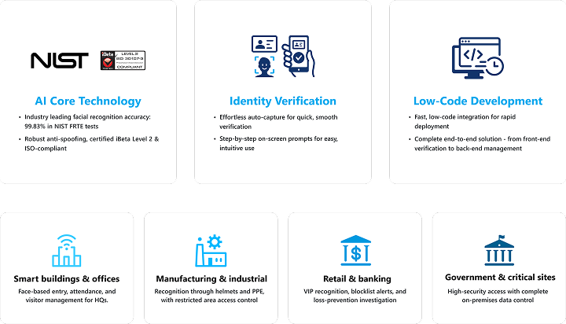
卡片式呈現
明確劃分內容層級，讓重點資訊更容易掌握。
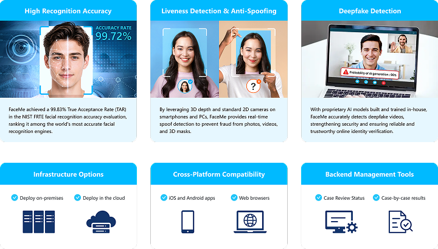
交錯式圖文編排
以底色區分段落，清楚呈現不同產品應用。
以共通設計邏輯延伸至各產品頁
將前面整理好的設計架構與模組套用到不同產品頁，以共同的設計邏輯維持頁面間的連貫性，同時依產品內容彈性調整。
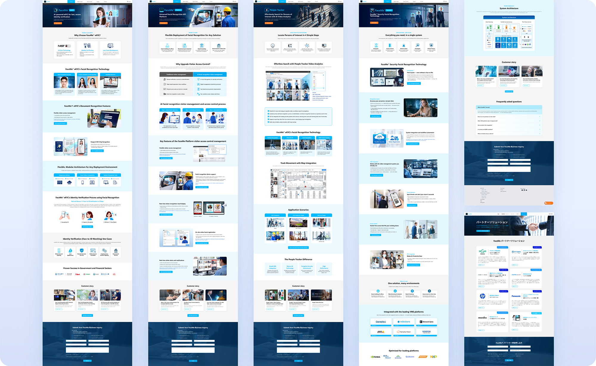
跨部門協作
與產品及行銷團隊釐清內容需求與呈現方向，並與工程團隊確認實作方式，透過跨部門協作持續調整設計，兼顧使用體驗、商業需求與開發可行性
從設計到網頁實作
結合設計思維與 HTML／CSS 實作能力，將 Figma 設計轉化為 RWD 網頁，並運用 AI 輔助提升工作效率，同時兼顧程式結構與後續維護，串聯設計與開發流程。
專案執行方式 ：
Figma 設計稿
UI 設計與規格整理
Claude AI 協助
解析結構、產出程式碼初稿
調整 HTML / CSS（RWD）
人工調整切版細節，確保品質與一致性。
網頁交付
完成可編輯的網頁，快速驗證與上線。
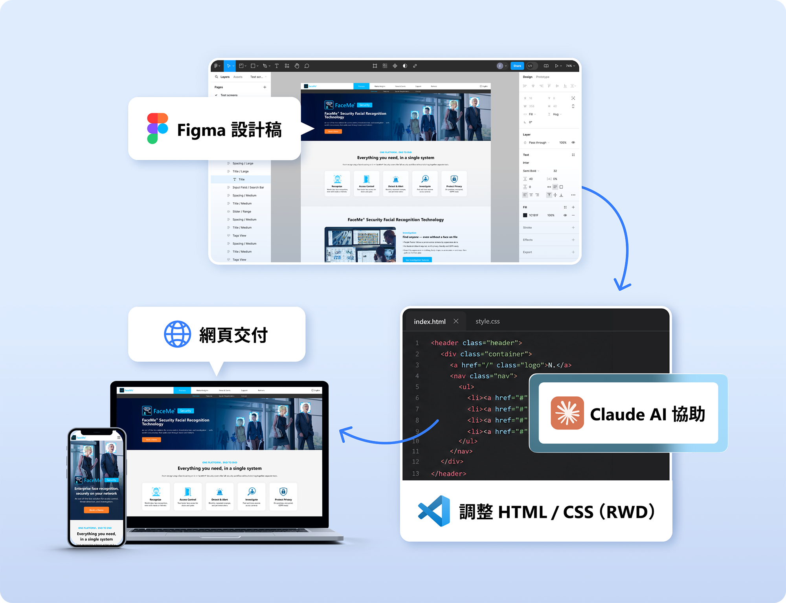
改版上線後的關鍵成效
改版後的網站效能與使用者參與度皆有明顯改善，透過介面重構與前端調整，網站載入效率與整體使用體驗獲得提升，並從 Lighthouse 與 GA4 數據中得到具體驗證。